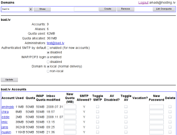

Iris - mail server integration package
Iris is a CGI script, Exim MTA configuration file, and instructions to build an
e-mail server with virtual domains support, authenticated SMTP relay, vacation,
SMTP-time malware/spam/over-quota reject, and web based account and domain
administration, including domain-level access control for delegated domain
management.
Based on Exim MTA, Courier IMAP or, alternativelly, Dovecot, MySQL, Perl.
Download
Features
-
Single server in this configuration is able to handle multiple independent
domains with separate sets of users and aliases.
-
Accounts maintenance is performed via web interface.
-
Super-user(s) can modify everything. Selected users are allowed to modify
domain(s) assigned to them, within limits set by configured quota.
-
Malware is stopped at SMTP time by rejecting delivery instantly, basing
on the decisions made by antivirus and antispam software, supplemented with
RBL.
-
Accounts are monitored for space usage and e-mail delivery is deferred in
case of over-quota condition.
-
Vacation auto-responder is careful to whom and when it sends replies to and
is end-user controllable via supplied SquirrelMail plug-in.
-
IMAP/POP3 logins could be restricted for selected domain, preserving accounts
and uninterrupted incoming message delivery.
-
In preparation to move particular e-mail domain to the server, the domain
could be hidden from MTA, and then made visible on the flip of a switch,
after initial configuration is performed.
The system is used in a medium size installation - 1000+ active e-mail
accounts - and proven to be reliable, low TCO solution.

Getting help
The primary source of help is Iris mail Google group.
Post your questions there.